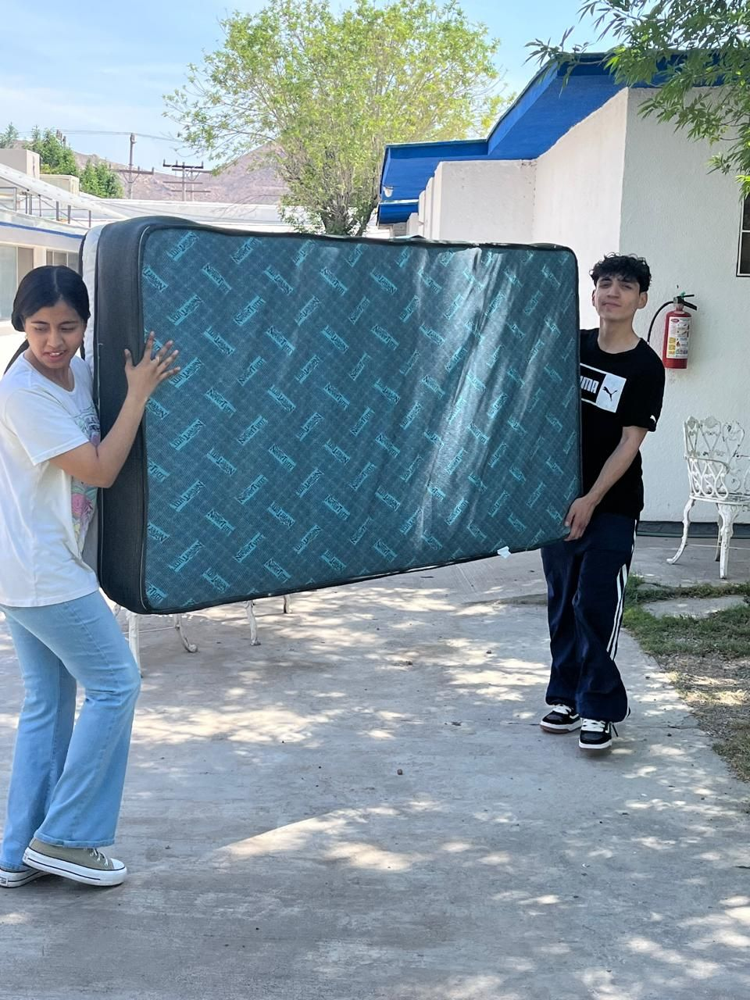
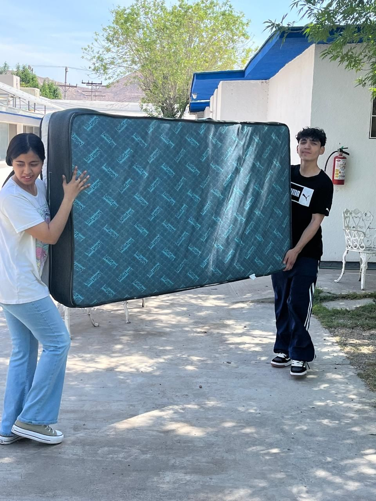
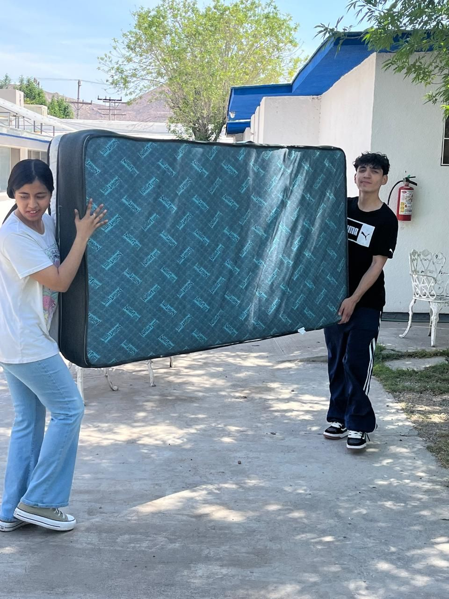

14 de abril del 2025
Dia de introducción
| Hora | Actividad |
|---|---|
| 11:00 a.m. | Llegada de voluntarios, nos presentamos al personal y nos dieron la bienvenida. |
| 11:11 a.m. | Iniciamos ayudando a transportar algunos mobiliarios del lugar. |
| 11:45 p.m. | Citamos a la coordinadora para organizar horarios y actividades para las siguientes visitas. |
| 12:00 p.m. | Finalización del servicio. |

RESULTADOS:
Logramos cumplir con lo planeado en esa visita y pudimos adaptarnos en horarios, pudimos crear un vínculo con los representantes de la organización y logramos una gran aceptación por parte de la institución.
OBSERVACIONES:
• Notamos que es necesario integrar nuevas actividades.
• Tendremos que variar mucho en actividades y acercamiento, debido al nivel de accesibilidad e interés de varias residentes.
• Hubo retrasos en el inicio del servicio debido a ajustes y organización de horarios.
CONCLUSIONES Y RECOMENDACIONES
Conclusiones:
• La actividad fue exitosa y cumplió su objetivo social, fortaleciendo los vínculos entre voluntarios y a la mejora de comunicación entre ambas partes.
• Se evidenció una muy buena disposición por parte de todos los participantes presentes.
Recomendaciones:
• Planificar un equipo fijo de presentación y otro para la conclusión de las futuras actividades.
• Realizar una capacitación previa a la visita para mejorar la contribución y tiempo entre los voluntarios.